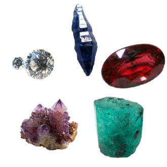

A gemstone (also called a fine gem, jewel, precious stone, semiprecious stone, or simply gem) is a piece of mineral crystal which, when cut or polished, is used to make
jewelry or other adornments. Certain rocks (such as lapis lazuli, opal, and obsidian) and occasionally organic materials that are not minerals (such as amber,
jet, and pearl) may also be used for jewelry and are therefore often considered to be gemstones as well. Most gemstones are hard, but some softer minerals such as
brazilianite may be used in jewelry because of their color or luster or other physical properties that have aesthetic value. However, generally speaking, soft minerals
are not typically used as gemstones by virtue of their brittleness and lack of durability.
Characteristics and classification
The traditional classification in the West, which goes back to the ancient Greeks, begins with a distinction between precious and semi-precious; similar distinctions are
made in other cultures. In modern use, the precious stones are emerald, ruby, sapphire and diamond, with all other gemstones being semi-precious. This distinction
reflects the rarity of the respective stones in ancient times, as well as their quality: all are translucent, with fine color in their purest forms (except for the
colorless diamond), and very hard with a hardness score of 8 to 10 on the Mohs scale. Other stones are classified by their color, translucency, and hardness. The
traditional distinction does not necessarily reflect modern values; for example, while most garnets are relatively inexpensive, a green garnet called tsavorite can be
far more valuable than a mid-quality emerald. Another traditional term for semi-precious gemstones used in art history and archaeology is hardstone. The use of the
terms "precious" and "semi-precious" in a commercial context is arguably misleading, as it suggests that certain stones are more valuable than others, which is not
always reflected in their actual market value—although the terms may generally be accurate when referring to desirability.

Group of precious and semiprecious stones—both uncut and
faceted—including (clockwise from top left) diamond, uncut synthetic sapphire, ruby, uncut emerald, and amethyst crystal cluster.
Value
Gemstones have no universally accepted grading system. Diamonds are graded using a system developed by the Gemological Institute of America (GIA) in the early 1950s.
Historically, all gemstones were graded using the naked eye. The GIA system included a major innovation: the introduction of 10x magnification as the standard for
grading clarity. Other gemstones are still graded using the naked eye (assuming 20/20 vision).
Grading
A mnemonic device, the "four Cs" (color, cut, clarity, and carats), has been introduced to help describe the factors used to grade a diamond. With modification,
these categories can be useful in understanding the grading of all gemstones. The four criteria carry different weights depending upon whether they are applied to
colored gemstones or to colorless diamonds. In diamonds, the cut is the primary determinant of value, followed by clarity and color. An ideally cut diamond will
sparkle, to break down light into its constituent rainbow colors (dispersion), chop it up into bright little pieces (scintillation), and deliver it to the eye
(brilliance). In its rough crystalline form, a diamond will do none of these things; it requires proper fashioning and this is called "cut". In gemstones that
have color, including colored diamonds, the purity, and beauty of that color is the primary determinant of quality.
Synthetic and artificial gemstones
Synthetic gems are physically, optically, and chemically identical to the natural stone, but are created in a laboratory. Imitation or simulated stones are
chemically different from the natural stone, but may appear quite similar to it; they can be more easily manufactured synthetic gemstones of a different mineral
(spinel), glass, plastic, resins, or other compounds.
Ways of Making Artificial Gemstones
Category
Process
Description
Gemstones Produced
Notes
Melt Process
Verneuil Flame Fusion
Uses an oxyhydrogen flame to melt powdered chemicals, forming a crystal (boule) on a pedestal.
Ruby, Sapphire (Corundum)
Most cost-effective method. Different additives produce different colors.
Czochralski (Crystal Pulling)
A seed crystal is dipped into molten material and slowly pulled upward, allowing the gem to grow layer by layer.
Corundum
Least popular method due to cost. Developed in 1918.
Solution Process
Flux Growth
Gem ingredients are dissolved in molten flux inside a crucible and recrystallize into gemstones as the mixture cools.
Emerald, Corundum
Very slow process (months to a year). First successful method for emerald synthesis.
Hydrothermal Growth
Simulates natural crystal growth by sealing gem ingredients in water under high pressure and heat to crystallize on a seed stone.
Emerald, Quartz, Spinel
Produces high-quality stones with few inclusions. Takes several weeks.